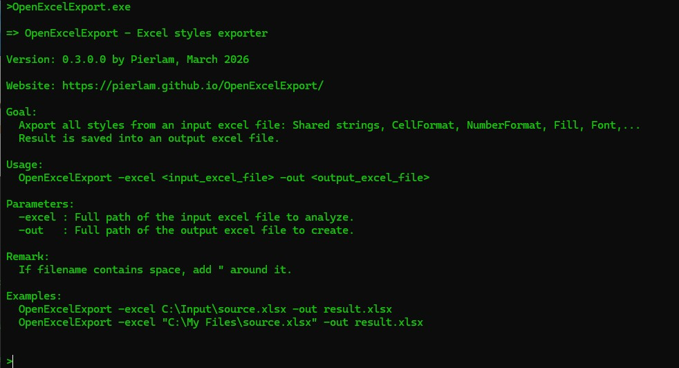
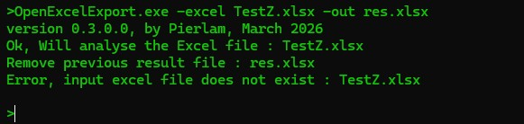
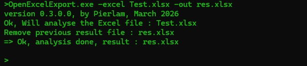

Open a Terminal and execute the application.
If you execute the application without any parameter, a short help will be displayed:
If you try to analyse an Excel which does not exists, an error will be displayed.
You have to analyse the content of an Excel file, execute the application and provide the two expected parameters:
1- The excel file to analyse,
2- the Excel result output file.
